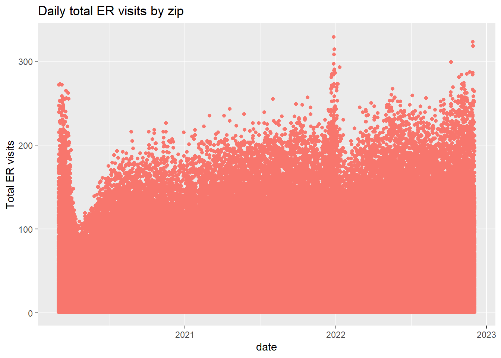
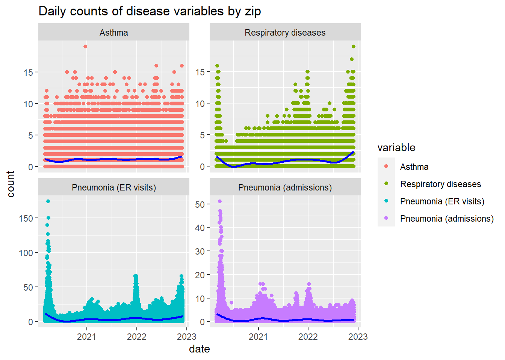

Data Processing
Merging joined_respiratory.csv and
air_quality_disease.csv
# Load dataset with respiratory and asthma counts (missing some zipcodes)
dis_asth_df = read_csv("data/cleaned_data/joined_respiratory.csv") |>
filter(zip != 88888 & zip != "Citwide" & age_group == "All age groups") |>
mutate(date = as.Date(format(as.Date(date, "%m/%d/%y"))),
year = as.numeric(format(date, format = "%Y")),
month = month.name[as.numeric(format(date, format = "%m"))],
day = as.numeric(format(date, format = "%d")),
zip = as.numeric(zip)) |>
select(year, month, day, zip, count_resp, count_asth)
# Load dataset with pneumonia data
dis_pneu_df = read_csv("data/raw_data/disease_hospital_admin.csv") |>
separate(date, into=c("month", "day", "year")) |>
mutate(day = as.numeric(day),
month = month.name[as.numeric(month)],
year = as.numeric(year)) |>
rename(zip = mod_zcta) |>
select(year, month, day, zip, total_ed_visits, ili_pne_visits, ili_pne_admissions)
# Merge two disease datasets
all_dis_df =
full_join(dis_asth_df, dis_pneu_df, by = c("month", "day", "year", "zip"))
# Now merge disease with air quality dataset
air_qual_df = read_csv("data/cleaned_data/alt_air_data.csv") |>
separate(date, into=c("month", "day", "year")) |>
mutate(day = as.numeric(day),
month = month.name[as.numeric(month)],
year = as.numeric(year)) |>
filter(!(year == '2020' & month == 'January'),
!(year == '2020' & month == 'February'),
!(aqs_parameter_desc == "Acceptable PM2.5 AQI & Speciation Mass")) |>
rename(zip = zip_code) |>
select(year, month, day, zip, daily_aqi_value, pollutant, value) |>
group_by(day, month, year, zip, pollutant) |>
summarize(value = mean(value))
# air_qual_df_aqi = read_csv("data/cleaned_data/alt_air_data.csv") |>
# separate(date, into=c("month", "day", "year")) |>
# mutate(day = as.numeric(day),
# month = month.name[as.numeric(month)],
# year = as.numeric(year)) |>
# filter(!(year == '2020' & month == 'January'),
# !(year == '2020' & month == 'February'),
# !(aqs_parameter_desc == "Acceptable PM2.5 AQI & Speciation Mass")) |>
# rename(zip = zip_code) |>
# select(year, month, day, zip, daily_aqi_value, pollutant, value) |>
# group_by(day, month, year, zip, pollutant) |>
# summarize(daily_aqi = mean(daily_aqi_value))
### note: removed acceptable pm2.5... from https://www.epa.gov/aqs/aqs-memos-technical-note-reporting-pm25-continuous-monitoring-and-speciation-data-air-quality
# Finally merge disease and air qual data together
air_qual_dis = # with value
full_join(all_dis_df, air_qual_df, by = c("month", "day", "year", "zip")) |>
mutate(
numeric_month = match(month, month.name),
date = as.Date(paste(year, numeric_month, day, sep = "-"), format = "%Y-%m-%d")
) |>
select(year, month, day, date, zip, count_resp, count_asth, total_ed_visits,
ili_pne_visits, ili_pne_admissions, pollutant, value) |>
pivot_wider(names_from = pollutant,
values_from = value) |>
select(-`NA`) |>
rename(pm25_ug_m3_lc = PM2.5,
co_ppm = CO,
o3_ppm = Ozone,
no2_ppb = NO2) |>
filter(!(year == '2022' & month == 'December'))
# air_qual_dis_aqi = # with daily aqi value
# full_join(all_dis_df, air_qual_df_aqi, by = c("month", "day", "year", "zip")) |>
# select(year, month, day, zip, count_resp, count_asth, total_ed_visits,
# ili_pne_visits, ili_pne_admissions, pollutant, daily_aqi) |>
# pivot_wider(names_from = pollutant,
# values_from = daily_aqi) |>
# select(-`NA`) |>
# rename(pm25_ug_m3_lc = PM2.5,
# co_ppm = CO,
# o3_ppm = Ozone,
# no2_ppb = NO2) |>
# filter(!(year == '2022' & month == 'December')) |>
# mutate(
# numeric_month = match(month, month.name),
# date = as.Date(paste(year, numeric_month, day, sep = "-"), format = "%Y-%m-%d")
# )
# measurement: ozone (daily_max_8_hour_ozone_concentration)
# co (daily_max_8_hour_co_concentration)
# pm2.5 (daily_mean_pm2_5_concentration)
# no2 (daily_max_1_hour_no2_concentration)Compare two air quality datasets (daily vs. seasonal/annual)
airqual_annual = read_csv("data/cleaned_data/uhf_airquality.csv") |>
filter(str_detect(name, "Fine") | str_detect(name, "NO2") | str_detect(name, "O3"))
#### Prepare dataset from daily data (Summer: 1June-31Aug, Winter 1Dec-28Feb)
# Annual averages for each pollutant and each zip
airqual_yr_avg = air_qual_df |>
group_by(year, zip, pollutant) |>
summarize(mean = mean(value)) |>
pivot_wider(
names_from = pollutant,
values_from = mean
)
# Seasonal averages for each pollutant and each zip
airqual_szn_avg = air_qual_df |>
mutate(season = case_when(
month %in% c("June", "July", "August") ~ "summer",
month %in% c("December", "January", "February") ~ "winter",
TRUE ~ "other"
)) |>
filter(season != "other") |>
group_by(season, year, zip, pollutant) |>
summarize(mean = mean(value)) |>
pivot_wider(
names_from = pollutant,
values_from = mean
)
#### Prepare dataset from daily data
airqual_annual = read_csv("data/cleaned_data/uhf_airquality.csv") |>
filter(str_detect(name, "Fine") | str_detect(name, "NO2") | str_detect(name, "O3")) |>
select(name, )
#### Comparison between daily data and yearly/seasonal dataExploratory Data Analysis
How do disease variables change over time?
Let us first visualize how the number of emergency department visits change over time. We can see that daily ER visits seem to peak in winter months except in 2021. This could be due to COVID restrictions.
all_dis_plot_df = all_dis_df |>
mutate(
numeric_month = match(month, month.name),
date = as.Date(paste(year, numeric_month, day, sep = "-"), format = "%Y-%m-%d")
) |>
select(-day, -month, -year, -numeric_month) |>
pivot_longer(cols = c("count_resp", "count_asth", "total_ed_visits", "ili_pne_visits", "ili_pne_admissions"),
names_to = "variable",
values_to = "count")
er_plot = all_dis_plot_df |>
filter(variable == "total_ed_visits") |>
plot_ly(x = ~date, y = ~count,
type = 'scatter',
mode = 'markers',
text = ~paste("Zip: ", zip, "<br>Date:", date, "<br>Count:", count),
color = "viridis") |>
layout(title = 'Daily total ER visits by zip', plot_bgcolor = "#e5ecf6",
xaxis = list(title = "Date"),
yaxis = list(title = "Counts"))
er_plotall_dis_df |>
mutate(
numeric_month = match(month, month.name),
date = as.Date(paste(year, numeric_month, day, sep = "-"), format = "%Y-%m-%d")
) |>
ggplot(aes(x = date, y = total_ed_visits, color = "#9D5FF3")) +
geom_point() +
labs(title = "Daily total ER visits by zip",
y = "Total ER visits") +
theme(legend.position = "none")
From the plot below, we can see that the number of emergency department visits related to pneumonia peak during winter seasons.
resp_plot = all_dis_plot_df |>
filter(variable == "count_resp") |>
plot_ly(x = ~date, y = ~count,
type = 'scatter',
mode = 'markers',
text = ~paste("Zip: ", zip, "<br>Date:", date, "<br>Count:", count),
marker = list(color = "#35B779"))
asth_plot = all_dis_plot_df |>
filter(variable == "count_asth") |>
plot_ly(x = ~date, y = ~count,
type = 'scatter',
mode = 'markers',
text = ~paste("Zip: ", zip, "<br>Date:", date, "<br>Count:", count),
marker = list(color = "#B8860B"))
pne_visit_plot = all_dis_plot_df |>
filter(variable == "ili_pne_visits") |>
plot_ly(x = ~date, y = ~count,
type = 'scatter',
mode = 'markers',
text = ~paste("Zip: ", zip, "<br>Date:", date, "<br>Count:", count),
marker = list(color = "#440154"))
pne_adm_plot = all_dis_plot_df |>
filter(variable == "ili_pne_admissions") |>
plot_ly(x = ~date, y = ~count,
type = 'scatter',
mode = 'markers',
text = ~paste("Zip: ", zip, "<br>Date:", date, "<br>Count:", count),
marker = list(color = "#31688E"))
fig = subplot(resp_plot, asth_plot, pne_visit_plot, pne_adm_plot,
nrows = 2, shareX = TRUE) |>
layout(plot_bgcolor='#e5ecf6',
title = 'Daily counts of variables by zip',
xaxis = list(title = "date"),
showlegend = FALSE)
annotations = list(
list(
x = 0.25, y = 0.9,
text = "Respiratory diseases",
xref = "paper", yref = "paper",
xanchor = "center", yanchor = "bottom",
showarrow = FALSE),
list(
x = 0.75, y = 0.9,
text = "Asthma",
xref = "paper", yref = "paper",
xanchor = "center", yanchor = "bottom",
showarrow = FALSE
),
list(
x = 0.25, y = 0.4, text = "Pneumonia (ER visits)",
xref = "paper", yref = "paper",
xanchor = "center", yanchor = "bottom",
showarrow = FALSE
),
list(
x = 0.75, y = 0.4,
text = "Pneumonia (admissions)",
xref = "paper", yref = "paper",
xanchor = "center", yanchor = "bottom",
showarrow = FALSE
))
fig = fig |> layout(annotations = annotations)
figall_dis_plot_df = all_dis_df |>
mutate(
numeric_month = match(month, month.name),
date = as.Date(paste(year, numeric_month, day, sep = "-"), format = "%Y-%m-%d")
) |>
select(-day, -month, -year, -numeric_month) |>
pivot_longer(cols = c("count_resp", "count_asth", "total_ed_visits", "ili_pne_visits", "ili_pne_admissions"),
names_to = "variable",
values_to = "count")
dis_plot = all_dis_plot_df |>
filter(variable != "total_ed_visits") |>
mutate(variable = case_when(
variable =="count_resp" ~ "Respiratory diseases",
variable =="count_asth" ~ "Asthma",
variable =="ili_pne_visits" ~ "Pneumonia (ER visits)",
variable =="ili_pne_admissions" ~ "Pneumonia (admissions)"),
across(variable, ~factor(., levels=c("Asthma","Respiratory diseases",
"Pneumonia (ER visits)",
"Pneumonia (admissions)"))))|>
ggplot(aes(x = date, y = count, color = variable)) +
geom_point() +
geom_smooth(color = "blue") +
facet_wrap(~ variable, ncol = 2, scales="free_y") +
ggtitle("Daily counts of disease variables by zip") +
scale_color_discrete()
dis_plot
How do pollutant variables change over time?
poll_plot = air_qual_df |>
mutate(
numeric_month = match(month, month.name),
date = as.Date(paste(year, numeric_month, day, sep = "-"),
format = "%Y-%m-%d"),
pollutant = case_when(
pollutant =="CO" ~ "Carbon Monoxide (ppm)",
pollutant =="PM2.5" ~ "PM2.5 (μg/m3)",
pollutant =="Ozone" ~ "Ozone (ppm)",
pollutant =="NO2" ~ "Nitrogen Dioxide (ppb)"),
across(pollutant, ~factor(., levels=c("Carbon Monoxide (ppm)",
"Ozone (ppm)",
"Nitrogen Dioxide (ppb)",
"PM2.5 (μg/m3)"))),) |>
ggplot(aes(x = date, y = value, color = pollutant)) +
geom_point() +
geom_smooth(color = "blue") +
facet_wrap(~ pollutant, ncol = 2, scales="free_y") +
ggtitle("Daily average of each pollutant by zip") +
scale_color_discrete()
poll_plot